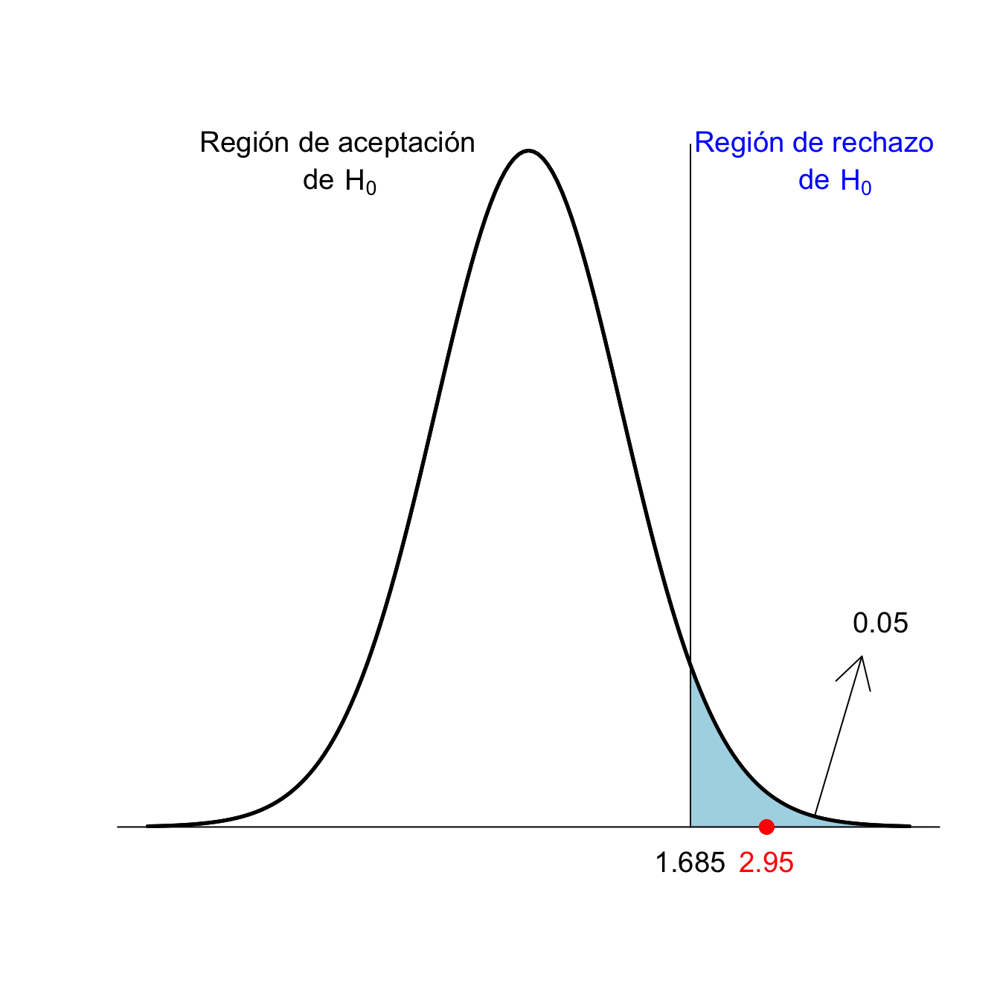
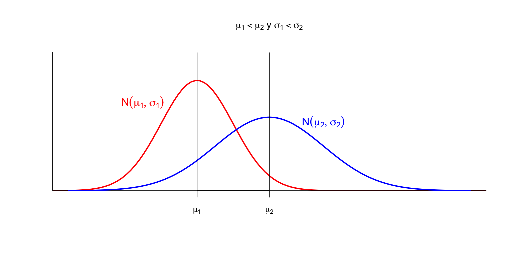
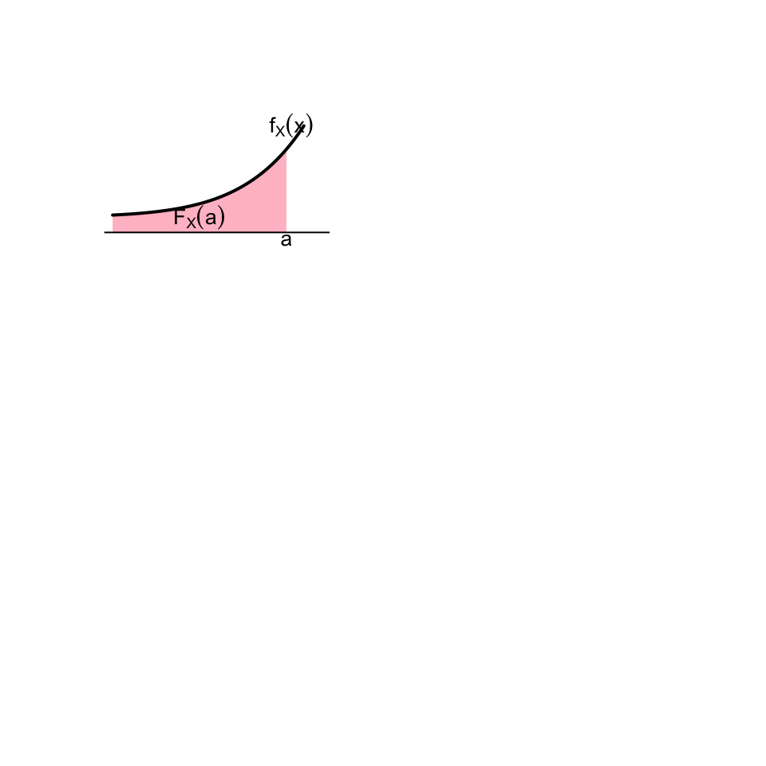

Lección 2 Intervalos de confianza
Los estimadores de la lección anterior nos permiten estimar el valor de una característica de una población, pero no nos indican el error que cometemos con esta estimación. En la práctica, lo que se suele hacer es complementar una estimación puntual con un intervalo que indique la precisión de la estimación. Esta precisión va a depender:
De la variabilidad de la variable aleatoria de interés, es decir, de su desviación típica.
Del tamaño de la muestra.
Y del nivel de confianza, o de seguridad, deseado para la estimación: cómo de seguros queremos estar de que la estimación es correcta.

2.1 Definiciones básicas
Un intervalo de confianza del Q% (para abreviar, un IC-Q%) de un parámetro poblacional es un intervalo obtenido aplicando a una muestra aleatoria simple de tamaño \(n\) una fórmula que satisface la propiedad siguiente:
El intervalo obtenido contiene el valor del parámetro poblacional el Q% de las veces que aplicamos la fórmula a muestras aleatorias simples de tamaño \(n\) tomadas al azar.
Tener una confianza del Q% significa pues que empleamos una fórmula que acierta el Q% de las veces; o, para ser precisos, el Q% de las veces que la aplicamos bien. Pero asumimos que en un (100-Q)% de las veces que la aplicamos da un intervalo que no contiene el valor del parámetro poblacional, y no sabemos cuándo sí y cuándo no. De manera que solo podemos tener una cierta confianza, fruto del optimismo, de que con nuestra muestra acierta, pero no podemos estar seguros del todo.
Ejemplo 2.1 En un experimento hemos medido el porcentaje de aumento de alcohol en sangre a 40 personas después de tomar 4 cañas de cerveza. En el Ejemplo 2.3 calcularemos con los datos obtenidos en este experimento un IC-95% para el porcentaje de aumento medio de alcohol en sangre de una persona después de beber 4 cañas de cerveza. Obtendremos el intervalo [40.53, 41.87].
Esto significa que estamos un 95% seguros de que el aumento medio de alcohol en sangre de una persona después de beber 4 cañas de cerveza está entre el 40.53% y el 41.87%, porque este intervalo lo habremos calculado con una fórmula que el 95% de las veces que la aplicamos a muestras aleatorias de 40 personas da un intervalo que contiene la media poblacional que queremos estimar. Nosotros somos optimistas y “confiamos” estar dentro de este 95% de aciertos.
No confundáis:
Intervalo de referencia del Q% para una variable aleatoria: Intervalo que contiene el valor de la variable aleatoria en un individuo con probabilidad Q%.
Intervalo de confianza del Q% para un parámetro: Intervalo que contiene el valor poblacional del parámetro de la variable aleatoria “con probabilidad” Q%, en el sentido de que lo hemos calculado con una fórmula que da un intervalo que contiene el parámetro el Q% de las veces que la aplicamos a una muestra aleatoria.
Intervalo de referencia del Q% para un estimador*: Intervalo que contiene el valor del estimador sobre una muestra aleatoria con probabilidad Q%.
Por ejemplo:
Si decimos que un intervalo de referencia del 95% para la concentración de una proteína en suero en individuos sanos medida en g/dl es [11,16], esto significa
- que un 95% de los individuos sanos tienen una concentración de esta proteína en suero entre 11 y 16 g/dl
o, equivalentemente,
- que si escogemos al azar un individuo sano,la probabilidad de que su concentración de esta proteína en suero esté entre 11 y 16 g/dl es del 95%.
Si decimos que un intervalo de confianza del 95% para la concentración media de una proteína en suero en individuos sanos medida en g/dl es [11,16], esto significa
- que hemos tomado una muestra aleatoria de concentraciones de esta proteína en suero en individuos sanos y a partir de esta muestra hemos estimado que, con un 95% de seguridad, la concentración media de esta proteína en suero en el total de la población de individuos sanos está entre 11 y 16 g/dl;
- y que tenemos este 95% de seguridad porque hemos calculado este intervalo con una fórmula que da un intervalo que contiene la media poblacional un 95% de las veces que la empleamos sobre muestras aleatorias del misma tamaño que la nuestra.
Si decimos que el 95% de las muestras de 100 concentraciones de una determinada proteína en suero en individuos sanos tienen la media muestral entre 11 y 16, esto es un intervalo de referencia del 95% para la media muestral de muestras de tamaño 100, no un intervalo de confianza para la concentración media poblacional ni un intervalo de referencia para el valor de la concentración en un individuo.
Que un IC-Q% para un parámetro \(\theta\) sea \([a,b]\) sirve:
Para estimar \(\theta\) con este margen de confianza: Estamos bastante seguros de que el valor poblacional de \(\theta\) está entre \(a\) y \(b\) (porque la fórmula empleada acierta a menudo).
Para descartar, con este margen de confianza, que \(\theta\) valga un valor concreto: Estamos bastante seguros de que el valor real de \(\theta\) no está ni por debajo de \(a\) ni por encima de \(b\) y por tanto de que es diferente de todos los valores \(<a\) o \(>b\).
Por ejemplo: si un IC-95% para la prevalència \(p\) de una determinada enfermedad en una población va de 0.025 a 0.047:
Estamos muy (“un 95%”) seguros de que \(p\in [0.025,0.047]\) (porque la fórmula empleada para calcular este intervalo acierta en un 95% de las veces).
Estamos muy (“un 95%”) seguros de que \(p\neq 0.05\) (porque 0.05 no pertenece al intervalo que estamos muy seguros que contiene el valor real de \(p\)).
Pero no estamos muy seguros de que \(p=0.03\), por mucho que \(0.03\in [0.025,0.047]\): estamos muy seguros de que \(p\) está entre 0.025 y 0.047, pero no tenemos ninguna seguridad de que valga un valor concreto entre estos límites, solo que está entre estos límites.
Hay dos tipos de métodos básicos de cálculo de intervalos de confianza a partir de una muestra aleatoria:
Paramétricos: Usando alguna fórmula basada en la distribución muestral del estimador. Se basan en algún teorema y solo tiene sentido usarlos si la variable aleatoria y la muestra aleatoria satisfacen (aproximadamente) las hipótesis del teorema.
No paramétricos. Los otros. El más popular, y nuestro favorito, es el bootstrap:
- De nuestra muestra, tomamos al azar muchas (miles) muestras aleatorias simples (permitiendo repeticiones) del misma tamaño que nuestra muestra.
- Calculamos el estimador para cada una de estas muestras.
- Usamos el vector de resultados para estimar un intervalo de confianza. Por ejemplo, tomamos como IC-95% el intervalo entre los cuantiles 0.025 y 0.975 de este vector.
El bootstrap se puede usar siempre y funciona bien si la muestra es aleatoria, pero se basa en un proceso aleatorio y por lo tanto cada ejecución sobre una misma muestra puede dar un intervalo diferente.
2.2 Un ejemplo: IC-95% para la media de una variable aleatoria normal
Una de las fórmulas más conocidas para intervalos de confianza y que tenéis que saber es la siguiente:
Vamos a explicar de dónde sale esta fórmula, puesto que es un paradigma de cómo se obtienen la mayoría de las fórmulas paramétricas para intervalos de confianza. Quien se la quiera tomar como dogma de fe, que pase al Ejemplo 2.2.
Supongamos pues que \(X\) es \(N(\mu,\sigma)\) y que tenemos una muestra aleatoria simple de tamaño \(n\), media muestral \(\overline{X}\) y varianza muestral \(\widetilde{S}^2_X\). En esta situación, sabemos que \[ T=\frac{\overline{X}-\mu}{\widetilde{S}_{X}/\sqrt{n}} \] tiene distribución t de Student con \(n-1\) grados de libertad, \(t_{n-1}\).
Si podemos encontrar \(A,B\in \mathbb{R}\) tales que \[ P(A\leq T\leq B)=0.95, \] entonces: \[ \begin{array}{rl} 0.95\!\!\!\! & =P\Bigg(A\leq \dfrac{\overline{X}-\mu}{\widetilde{S}_{X}/\sqrt{n}}\leq B\Bigg)\\[2ex] & =P\Bigg(A\cdot \dfrac{\widetilde{S}_X}{\sqrt{n}}\leq \overline{X}-\mu \leq B\cdot \dfrac{\widetilde{S}_X}{\sqrt{n}}\Bigg)\\[2ex] & =P\Bigg(-\overline{X}+A\cdot \dfrac{\widetilde{S}_X}{\sqrt{n}}\leq -\mu \leq -\overline{X}+B\cdot \dfrac{\widetilde{S}_X}{\sqrt{n}}\Bigg)\\[2ex] & =P\Bigg(\overline{X}-B\cdot \dfrac{\widetilde{S}_X}{\sqrt{n}}\leq \mu \leq \overline{X}-A\cdot \dfrac{\widetilde{S}_X}{\sqrt{n}}\Bigg) \end{array} \]
Como \(P(A\leq T\leq B)=0.95\) significa que para el 95% de las muestras aleatorias simples de tamaño \(n\) el valor de \(T\) está entre \(A\) y \(B\), \[ P\Bigg(\overline{X}-B\cdot \frac{\widetilde{S}_X}{\sqrt{n}}\leq \mu \leq \overline{X}-A\cdot \frac{\widetilde{S}_X}{\sqrt{n}}\Bigg)=0.95 \] significará que para el 95% de las muestras aleatorias simples de tamaño \(n\) la \(\mu\) cae dentro del intervalo \[ \Bigg[\overline{X}-B\cdot \frac{\widetilde{S}_X}{\sqrt{n}},\ \overline{X}-A\cdot \frac{\widetilde{S}_X}{\sqrt{n}}\Bigg] \] Por lo tanto, ¡esto será un IC-95% para \(\mu\)!
Nos falta encontrar los \(A,B\) tales que \(P(A\leq T\leq B)=0.95\). Para encontrarlos, emplearemos cuantiles de la distribución de \(T\). Recordemos que, por definición de cuantil, \[ P(T\leq t_{n-1,0.975})=0.975 \] y por la simetría de la \(t\) de Student, \[ P(T\leq -t_{n-1,0.975})=P(T\geq t_{n-1,0.975})=0.025 \] Por tanto: \[ \begin{array}{l} P(-t_{n-1,0.975}\leq T\leq t_{n-1,0.975})\\ \quad =P(T\leq t_{n-1,0.975})-P(T\leq -t_{n-1,0.975})\\ \quad =0.975-0.025=0.95 \end{array} \]

Así pues, podemos tomar \[ A=-t_{n-1,0.975},\quad B=t_{n-1,0.975} \] y obtenemos el IC-95% para \(\mu\) anunciado: \[ \Bigg[\overline{X}-t_{n-1,0.975}\cdot \frac{\widetilde{S}_X}{\sqrt{n}},\ \overline{X}+t_{n-1,0.975}\cdot\frac{\widetilde{S}_X}{\sqrt{n}}\Bigg] \]
Ejemplo 2.2 Hagamos un experimento para ver que, efectivamente, esta fórmula “acierta”, en el sentido de que el intervalo que produce contiene la \(\mu\), alrededor del 95% de las veces. En el bloque de código de R siguiente:
Generamos al azar una
Poblaciónde 107 “individuos” que siguen una ley normal estándar y calculamos la mediamude esta población.Definimos una función
ICque calcula el IC-95% para la media \(\mu\) con la fórmula anterior.Tomamos, al azar, 200 muestras aleatorias simples de tamaño 50 de nuestra población y les aplicamos esta función. Obtenemos una matriz
Mde 200 columnas formadas por los dos extremos de los intervalos (el inferior en la primera fila y el superior en la segunda fila).Dibujamos los intervalos en un gráfico, donde aparecerán en gris los que aciertan y en rojo los que no aciertan. La recta vertical marca la media poblacional \(\mu\).
Población=rnorm(10^7)
mu=mean(Población)
IC=function(x){
n=length(x)
mean(x)+qt(0.975,n-1)*sd(x)/sqrt(n)*c(-1,1)}
M=replicate(200,IC(sample(Población,50,replace=TRUE)))
plot(1,type="n",xlim=c(-0.8,0.8),ylim=c(0,200),
xlab="Valores",ylab="Repeticiones", main="200 IC-95%")
seg.int=function(i){color="grey";
if((mu<M[1,i]) | (mu>M[2,i])){color="red"}
segments(M[1,i],i,M[2,i],i,col=color,lwd=2)}
sapply(1:200,FUN=seg.int)
abline(v=mu,lwd=2)
Si contáis los intervalos rojos, veréis que hemos fallado 11 veces y por lo tanto hemos acertado 189 veces, es decir, en un 94.5% de los intervalos. Es aproximadamente el que esperábamos. Si lo probáis en casa, ejecutando el código de R que hemos dado, obtendréis otros resultados, a veces mejores, a veces peores. Es lo que tiene la aleatoriedad.
Por ejemplo, de media, un 5% de las veces que calculemos un IC-95%, el parámetro poblacional no pertenecerá al intervalo obtenido. En nuestro experimento, de los 200 IC-95% que hemos calculado, 11 no han contenido el valor real de \(\mu\).
Por lo tanto, si calculamos \(n\) IC-95% sobre muestras aleatorias simples independientes, el número de veces que el intervalo resultante será erróneo, es decir, no contendrá el parámetro poblacional, seguirá una distribución binomial \(B(n,0.05)\). El gráfico siguiente representa el valor de \(P(X\geq 1)\) para una variable aleatoria \(X\) de tipo \(B(n,0.05)\), para \(n=0,...,100\), y por tanto la probabilidad de que si calculamos \(n\) IC-95% sobre muestras aleatorias simples independientes, al menos uno de ellos no contenga el parámetro poblacional deseado.

Esto es un problema grave en artículos científicos donde se calculen intervalos de confianza para muchos parámetros. De cada 20 IC-95% que calculemos, hemos de esperar que 1 sea erróneo. Y no podemos hacer nada al respecto, salvo aumentar el nivel de confianza de todos ellos (pero entonces, como veremos, los intervalos serán más anchos).
Ejemplo 2.3 Volvamos al experimento en el que medimos el porcentaje de aumento de alcohol en sangre a 40 personas después de tomar 4 cañas de cerveza. La media y la desviación típica muestral de estos porcentajes de incremento fueron \[ \overline{x}=41.2,\quad \widetilde{s}=2.1 \]
Para calcular un IC-95% para el porcentaje medio de aumento, \(\mu\), supondremos que la variable aleatoria de interés (de la que queremos estimar la media) \(X\), que es “Tomamos una persona y le medimos el porcentaje de aumento de alcohol en sangre después de tomar 4 cañas de cerveza”, es normal y que la muestra que hemos tomado de esta variable es aleatoria simple.
Entonces, como \(t_{n-1,0.975}\)=qt(0.975,39)=2.0227, un IC-95% para \(\mu\) es
\[
41.2\pm 2.0227\cdot \frac{2.1}{\sqrt{40}}\Rightarrow 41.2\pm 0.67\Rightarrow [40.53, 41. 87]
\]
Por lo tanto, estimamos con un 95% de confianza que el porcentaje medio de aumento de alcohol en sangre después de tomar 4 cañas de cerveza está entre el 40.53% y el 41. 87%.
Para calcular el intervalo anterior hemos supuesto que la variable poblacional “Porcentaje de aumento de alcohol en sangre después de tomar 4 cañas de cerveza” sigue una distribución normal. ¿Y si no fuera normal?
En este caso, como el tamaño de la muestra \(n=40\) es grande, y gracias al Teorema Central del Límite, por el Teorema 2.2 de la próxima sección el intervalo obtenido sigue siendo (aproximadamente) un intervalo de confianza del 95% para \(\mu\).
Si \(n\) fuera pequeño y \(X\) muy diferente de una normal, no se puede usar esta fórmula y hay que buscarse la vida (por ejemplo, emplear el método bootstrap).
También hemos supuesto que era una muestra aleatoria simple. ¿Y si no lo es?
Si es aleatoria, como la población sobre la que tenemos definida nuestra variable aleatoria, las personas del mundo que pueden tomar 4 cañas de cerveza, es muy grande, a efectos prácticos la podemos considerar simple.
Pero seguro que no es aleatoria, sino oportunista. En este caso, no hemos sacado 40 personas por sorteo de la lista de toda la población mundial, ni siquiera de la de Mallorca, sino que hemos buscado voluntarios. Entonces, no podemos hacer nada para salvar la fórmula, y su validez depende de si la muestra de personas usada puede pasar por aleatoria o no.
2.3 Intervalo de confianza para la media basado en la t de Student
El mismo argumento de la sección anterior, cambiando 0.95 por \(q\), da:
Teorema 2.1 Si \(X\) es \(N(\mu,\sigma)\) y tomamos una muestra aleatoria simple de tamaño \(n\), un IC-\(q\) para \(\mu\) es \[ \overline{X}\pm t_{n-1,(1+q)/2}\cdot \frac{\widetilde{S}_X}{\sqrt{n}} \]
Recordad que en los IC-0.95, \(q=0.95\) y por tanto \((1+q)/2=1. 95/2=0.975\). La fórmula de la sección anterior es un caso particular de esta.
Usando el Teorema Central del Límite y algunas aproximaciones, tenemos el siguiente resultado:
Teorema 2.2 Si \(X\) es una variable aleatoria cualquiera de media poblacional \(\mu\) y tomamos una muestra aleatoria simple de \(X\) de tamaño \(n\) grande (digamos, de 40 o más elementos), entonces, un IC-\(q\) para \(\mu\) es aproximadamente \[ \overline{X}\pm t_{n-1,(1+q)/2}\cdot \frac{\widetilde{S}_X}{\sqrt{n}} \]
La aproximación del teorema anterior es mejor cuanto mayor sea \(n\) o cuanto más próxima a una normal sea la variable poblacional \(X\).
En resumen:
Observad que la estructura del IC-\(q\) para \(\mu\) dado por esta fórmula es
estimador \(\pm\) (\(\frac{1+q}{2}\)-cuantil de la distr. muestral)\(\times\)(error típico de la muestra)
Esta estructura es muy típica (pero no todos los intervalos de confianza paramétricos tienen esta forma, ¿eh?) y cumple que:
El intervalo de confianza está centrado en la estimación puntual.
La “probabilidad de equivocarnos” se reparte por igual a los dos lados del intervalo: una fracción \(q/2\) de las veces el parámetro estará a la izquierda del extremo inferior y una fracción \(q/2\) de las veces estará a la derecha del extremo superior.
Además, tenemos que:
- Para una misma muestra y una misma fórmula (paramétrica) para calcular el intervalo de confianza, si el nivel de confianza crece, el intervalo se ensancha.
Esto es general, para todos los intervalos de confianza paramétricos. La idea intuitiva es que, para estar más seguros de que un intervalo contiene un valor, el intervalo tiene que ser más ancho. En un intervalo de confianza con la estructura descrita hace un momento, el motivo matemático es que a mayor \(q\), mayor \((1+q)/2\)-cuantil de la distribución muestral.
Por ejemplo, en el Ejemplo 2.3, teníamos \(n=40\), \(\overline{x}=41. 2\) y \(\widetilde{s}=2.1\):
- El IC-95% tiene \(q=0.95\), por lo tanto \(t_{n-1,(1+q)/2}=t_{39,0.975}=2.02\), y daba $$
- 22.0241. 20.67 $$
- El IC-99% tiene \(q=0.99\), por lo tanto \(t_{n-1,(1+q)/2}=t_{39,0.995}=2.71\), y da $$
- 22.7141. 20.9 $$ más ancho
- Pero si cambiamos de muestra (o de fórmula, si hay más de una) para calcular el intervalo de confianza, puede pasar cualquier cosa.
2.4 Intervalos de confianza para proporciones
Supongamos que tenemos una variable Bernoulli \(X\) con probabilidad poblacional de éxito \(p_X\) desconocida. Queremos calcular un intervalo de confianza para \(p_X\). Para hacerlo, tomamos una muestra aleatoria simple de \(X\) de tamaño \(n\), con número de éxitos \(S\) y por tanto proporción muestral de éxitos \(\widehat{p}_{X}=S/n\)
Explicaremos tres métodos para calcular este intervalo de confianza:
Método “exacto” de Clopper-Pearson
Este método se basa en que el número de éxitos \(S\) en muestras aleatorias simples de tamaño \(n\) de \(X\) tiene una distribución conocida: es binomial \(B(n,p_X)\). Razonando de manera similar a cómo obteníamos el intervalo para \(\mu\) basado en la t de Student se llega a una fórmula que os vamos a ahorrar, ya que nunca la vais a aplicar “a mano”.
Este método tiene la ventaja de que se puede aplicar siempre, independientemente del tamaño de la muestra, y es “exacto” porque se basa en la distribución exacta de \(S\). Pero tiene algunos inconvenientes:
- Como las proporciones muestrales en muestras de tamaño fijo avanzan a saltos (0, \(1/n\), \(2/n\), \(3/n\)…), suele dar intervalos de confianza más anchos de lo necesario.
- Los intervalos que produce no son de la forma “probabilidad muestral \(\pm\) algo”.
- Se necesita un ordenador para calcularlo, no se puede calcular a mano.
Método aproximado de Wilson
Supongamos ahora que tomamos una muestra aleatoria simple de \(X\) de tamaño \(n\) grande digamos, \(n\geq 40\), y proporción muestral de éxitos \(\widehat{p}_{X}\). En estas condiciones, por el Teorema Central del Límite, sabemos que \[ Z=\dfrac{\widehat{p}_{X}-p_X} {\sqrt{\frac{p_X(1-p_X)}{n}}}\approx N(0,1) \] Por lo tanto \[ P\Big(-z_{(1+q)/2}\leq \dfrac{\widehat{p}_{X}-p_X} {\sqrt{\frac{p_X(1-p_X)}{n}}}\leq z_{(1+q)/2}\Big)=q \]
Despejando \(p_X\) como en el cálculo del IC-95% para la \(\mu\) usando la t de Student, obtenemos el resultado siguiente (que no hay que saber, tranquilos):
Teorema 2.3 Si \(n\geq 40\), un IC-\(q\) para \(p_X\) es aproximadamente: \[ \frac{\widehat{p}_{X}+\frac{z_{(1+q)/{2}}^2}{2n}}{1+\frac{z_{(1+q)/{2}}^2}{n}}\pm \frac{z_{(1+q)/{2}}\sqrt{\frac{\widehat{p}_{X}(1-\widehat{p}_{X})}{n}+\frac{z_{(1+q)/{2}}^2}{4n^2}}}{1+\frac{z_{(1+q)/{2}}^2}{n}} \]
Fijaos en que:
- Este método no se puede usar con muestras de cualquier tamaño, han de ser grandes para poder invocar el Teorema Central del Límite.
- El centro del intervalo vuelve a no ser \(\widehat{p}_X\).
- Se basa en la aproximación a la normal dada por el Teorema Central del Límite, y por lo tanto el intervalo resultante es un intervalo de confianza “aproximado”, no exacto como el de Clopper-Pearson. Esto no es un gran problema, porque total, la muestra usada seguramente tampoco será simple.
Fórmula de Laplace
Supongamos finalmente que tomamos una muestra aleatoria simple de \(X\) de tamaño \(n\) todavía más grande y que el valor de \(\widehat{p}_{X}\) no es muy próximo ni a 0 ni a 1. Para fijar ideas, supongamos que:
- \(n\geq 100\)
- El número de éxitos en la muestra es \(\geq 10\)
- El número de fracasos en la muestra es \(\geq 10\)
En este caso, en la fórmula del intervalo de Wilson los términos \(z_{(1+q)/{2}}^2/n\) son despreciablemente pequeños comparados con los otros. Si los igualamos a 0, obtenemos la fórmula siguiente:
Teorema 2.4 En las condiciones explicadas, un IC-\(q\) para \(p_X\) es (aproximadamente): \[ \widehat{p}_{X}\pm z_{(q+1)/2}\sqrt{\frac{\widehat{p}_{X} (1-\widehat{p}_{X})}{n}} \]
Esta fórmula es la más popular, hasta el punto que forma parte de la “cultura general” de un científico. De hecho, tiene más de 200 años y precede en más de 100 años a la de Wilson. Además, tiene la forma familiar “estimador \(\pm\) cuantil\(\times\)error típico”.
Os tenéis que saber la fórmula de Laplace, no hay que saber las fórmulas de los otros dos intervalos. Pero sí cuándo se pueden usar y cuándo no.
Cuando podemos calcular más de un intervalo para \(p_X\), ¿cuál calculamos?
De entrada hay que decir que si podemos calcular más de un intervalo, seguramente los que podamos calcular darán resultados muy parecidos. Además, recordad que las tres fórmulas solo nos dan “un nivel de confianza \(q\)” si se aplican a muestras aleatorias simples, y nuestras muestras casi siempre serán oportunistas, en cuyo caso, si nos ponemos tiquismiquis, no podemos aplicar ninguno.
Solo un consejo: Si podéis usar la fórmula de Laplace, usadla. Todo el mundo lo conoce, forma parte de la cultura general del científico, y da un intervalo centrado en la proporción muestral.Ejemplo 2.4 En una muestra de 20 pacientes operados de cáncer de próstata con una nueva técnica, ninguno desarrolló complicaciones importantes en las 24 horas siguientes a la operación. ¿Cuál sería un IC-95% para la proporción de pacientes operados con esta técnica nueva que desarrollan complicaciones importantes en las 24 horas siguientes a la operación?
Para calcularlo solo podemos usar el método de Clopper-Pearson, y este es uno de los pocos casos en que este intervalo tiene una expresión analítica sencilla: Si en una muestra aleatoria simple de tamaño \(n\) de una variable \(Be(p_X)\) obtenemos 0 éxitos, el IC-\(q\) de Clopper-Pearson para \(p_X\) es \[ \Big[0,1-\Big(\frac{1-q}{2}\Big)^{1/n}\Big] \] que, si \(q=0.95\), queda \[ [0,1-0.025^{1/n}]. \] En nuestro caso, \(n=20\), da el intervalo [0,0.1684]. Por lo tanto, estimamos con un 95% de confianza que menos del 16.84% de los pacientes operados con esta técnica nueva desarrollan complicaciones importantes en las 24 horas siguientes.
Cuando se tiene que calcular “a ojo” un intervalo de confianza del 95% para una probabilidad \(p_X\) a partir de una muestra aleatoria simple donde no ha habido ningún éxito, a menudo se usa la regla siguiente:
Regla del 3: Cuando en una muestra aleatoria simple de tamaño \(n\) de una variable aleatoria de Bernoulli de parámetro \(p_X\) no encontramos ningún éxito, un IC-95% para \(p_X\) va, aproximadamente, de 0 a \(3/n\).
Con esta regla, en nuestro ejemplo con \(n=20\) obtendríem el intervalo [0,3/20]=[0,0.15], no muy lejos del [0,0.1684] que hemos obtenido.
Para ver como la regla del 3 aproxima el intervalo de Clopper-Pearson, el gráfico siguiente muestra los valores \(3/n\) y el extremo superior del IC-95% de Clopper-Pearson a partir de una muestra de tamaño \(n\) con 0 éxitos:

Si la muestra hubiera sido mayor, pongamos de 50 pacientes y de nuevo 0 complicaciones graves, hubiéramos podido usar el método de Wilson. Podéis comprobar con algo de paciencia que da [0,0.0713]. El método de Clopper-Pearson da en este caso [0,0.0711] y la regla del 3 [0,0.06].
El gráfico siguiente muestra los valores \(3/n\) y los extremos superiores de los IC-95% de Clopper-Pearson y de Wilson a partir de una muestra de tamaño \(n\) (\(n\geq 40\) para los intervalos de confianza de Wilson) con 0 éxitos:

Los extremos superiores de los intervalos de Clopper-Pearson y Wilson se superponen en este último gráfico.
Ejemplo 2.5 En un ensayo de un tratamiento de quimioterapia, en una muestra de 100 pacientes tratados, 25 desarrollaron cáncer testicular secundario. ¿Cuál es un IC-95% para la proporción de pacientes tratados con esta quimioterapia que desarrollan cáncer testicular.
En este caso podemos emplear los tres métodos.
- Clopper-Pearson, porque se puede usar siempre
- Wilson, porque \(n=100\geq 40\)
- Laplace, porque \(n\geq 100\), hay \(25\geq 10\) éxitos y \(75\geq 10\) fracasos.
Vamos a aplicar la fórmula de Laplace, que es la única que es sensato calcular a mano (y es la que os recomendamos usar si podéis). Tenemos que \(\widehat{p}_{X}=25/100=0.25\) y, como \(z_{0.975}=1.96\). Da: \[ 0.25\pm 1.96\sqrt{\frac{0.25\cdot 0.75}{100}}=0.25\pm 0.085\Rightarrow [0.165, 0.335] \] Concluimos, con un nivel de confianza del 95%, que entre aproximadamente un 16.5% y un 33.5% de los pacientes tratados con esta quimioterapia desarrollan cáncer testicular.
Por si os interesan:
- El intervalo de Clopper-Pearson da [0.169, 0.347]
- El intervalo de Wilson da [0.175, 0.343]
Como podéis ver, los tres dan muy parecidos, con diferencias en los extremos de una centésima de punto.
Cálculo del tamaño de la muestra para fijar el error
El margen de error (o la precisión) del intervalo de confianza de Laplace es \[ M= z_{(q+1)/2} \sqrt{\frac{\widehat{p}_{X} (1-\widehat{p}_{X})}{n}} \] porque el intervalo de confianza de Laplace es \(\widehat{p}_X\pm M\) y por lo tanto, si contiene el valor real de \(p_X\), el error \(|\widehat{p}_X-p_X|\) que cometemos cuando decimos que el valor de \(p_X\) es \(\widehat{p}_X\) es como máximo \(M\).
Una típica pregunta al diseñar un estudio es ¿de qué tamaño he de tomar la muestra para garantizar que el error en la estimación sea como máximo tal valor concreto? En el caso del intervalo de Laplace para una proporción, podemos dar un tamaño \(n\) que garantice un error máximo dado valga lo que valga \(\widehat{p}_{X}\in [0,1]\).
Fijaos que la función \(y=p(1-p)\), con \(p\in [0,1]\), es una parábola cóncava con vértice en su punto \(p=0.5\)  Por lo tanto, toma su valor máximo en \(p=0.5\). Así, pues \[ \widehat{p}_{X} (1-\widehat{p}_{X})\leq 0.5(1-0.5)=0.5^2\texto{ para todo $\widehat{p}_X\in[0,1]$} \] y por lo tanto \[ \begin{array}{l} \displaystyle M=z_{(q+1)/2} \sqrt{\frac{\widehat{p}_{X} (1-\widehat{p}_{X})}{n}}\\ \qquad\displaystyle \leq z_{(q+1)/2}\sqrt{\frac{0.5^2}{n}}=\frac{0.5z_{(q+1)/2}}{\sqrt{n}}=\frac{z_{(q+1)/2}}{2\sqrt{n}} \end{array} \]
De este modo, si tomamos \(n\) tal que \[ \frac{z_{(q+1)/2}}{2\sqrt{n}}\leq M_{max} \] entonces seguro que \(M\leq M_{max}\), valga lo que valga \(\widehat{p}_{X}\).
Por consiguiente, lo que haremos será calcular la \(n\) para obtener un error como máximo \(M_{max}\) en el caso más desfavorable (o en el peor de los casos): cuando el intervalo es lo más ancho posible, es decir , suponiendo que \(\widehat{p}_{X}=0.5\): \[ M_{max}\geq \frac{z_{(q+1)/2}}{2\sqrt{n}} \Rightarrow n\geq \left(\frac{z_{(q+1)/2}}{2\cdot M_{max}} \right)^2 \]
En resumen:
Teorema 2.5 Si \[ n\geq \left(\frac{z_{(q+1)/2}}{2\cdot M_{max}}\right)^2, \] el error del intervalo de Laplace calculado con una muestra de tamaño \(n\) siempre será \(\leq M_{max}\).
Ejemplo 2.6 ¿Cuál es el menor tamaño de una muestra que nos garantice un error de como máximo 0.05 al estimar una proporción \(p_X\) empleando un intervalo de confianza de Laplace del 95%?
Por el teorema anterior, para garantizar un error de 0.05 al calcular un IC 95% para una proporción \(p_X\) usando la fórmula de Laplace, tenemos que emplear una muestra de tamaño \(n\) tal que \[ n\geq \Bigg(\frac{z_{(1+q)/2}}{2M_{max}}\Bigg)^2=\Bigg(\frac{1.96}{0.1}\Bigg)^2=384.16 \]
El tamaño más pequeño que satisface esta condición es \(n=385\).
Observad tres cosas:
El valor de \(n\) solo depende del error y del nivel de confianza, no de la naturaleza del estudio.
Tal y como hemos encontrado la \(n\), estamos seguros de que si tomamos una muestra como mínimo de este tamaño, el margen de error del intervalo de confianza de Laplace será como máximo \(M_{max}\), sea cual sea la muestra. ¡Es de las pocas veces que podemos estar seguros de algo en estadística!
El teorema anterior es para el intervalo de Laplace, pero la \(n\) seguramente os saldrá muy grande y en este caso el intervalo de Laplace aproxima muy bien los otros dos intervalos, si la proporción muestral luego no os sale muy extrema.
“Poblaciones finitas”
En esta sección hasta ahora hemos usado muestras aleatorias simples. Ya sabemos que si tomamos muestras aleatorias sin reposición y la población es mucho más grande que el tamaño \(n\) de las muestras, las fórmulas dadas hasta ahora van a funcionar (aproximadamente) bien. Pero, ¿qué pasa si tomamos muestras aleatorias sin reposición y la población no es mucho más grande que el tamaño \(n\) de las muestras?
Por un lado, hay métodos tipo el de Clopper-Pearson que usan que el número de éxitos en muestras aleatorias sin reposición sigue una distribución hipergeométrica, pero son aun más complicados que el de Clopper-Pearson. Lo que se hace habitualmente es usar la fórmula de Laplace teniendo en cuenta el factor de población finita. Obtenemos por tanto que:
Si \(X\) una variable aleatoria de Bernoulli \(Be(p_X)\) definida sobre una población de tamaño \(N\) y tomamos una muestra aleatoria sin reposición de \(X\), con \(n\geq 100\) y números de éxitos y fracasos \(\geq 10\), un intervalo de confianza de nivel de confianza \(q\) para \(p_X\) es, aproximadamente, \[ \widehat{p}_{X}\pm z_{(q+1)/2}\sqrt{\frac{\widehat{p}_{X} (1-\widehat{p}_{X})}{n}}\sqrt{\frac{\vphantom{(}N-n}{N-1}} \]
En las condiciones del punto anterior, para obtener un intervalo de confianza de nivel de confianza \(q\) para \(p_X\) con un margen de error \(M_{max}\) en el caso más desfavorable (\(\widehat{p}_X=0.5\)) habrá que tomar una muestra de tamaño \[ n\geq \frac{Nz_{(q+1)/2}^2}{4M_{max}^2(N-1)+z_{(q+1)/2}^2} \]
Ejemplo 2.7 En una muestra aleatoria de 727 estudiantes (diferentes) de la UIB (\(N=12000\)), 557 afirmaron haber cometido plagio en algún trabajo durante sus estudios. ¿Cuál sería un intervalo de confianza del 95% para la proporción \(p_X\) de estudiantes de la UIB que han cometido plagio en algún trabajo?
Una muestra de 727 estudiantes diferentes es muy grande respecto del total de estudiantes de la UIB, por lo cual conviene emplear la fórmula de Laplace con el factor de población finita \[ \widehat{p}_{X}\pm z_{(q+1)/2}\sqrt{\frac{\widehat{p}_{X} (1-\widehat{p}_{X})}{n}}\sqrt{\frac{\vphantom{(}N-n}{N-1}} \] donde \(\widehat{p}_{X}=557/727=0.766\), \(z_{(q+1)/2}=1.96\), \(n=727\) y \(N=12000\): da \[ 0.766\pm \sqrt{\frac{0.766(1-0.766)}{727}}\sqrt{\frac{\vphantom{(}12000-727}{12000-1}}\Rightarrow [0.751,0.781] \] Estimamos con un nivel de confianza del 95% que entre un 75.1 y un 78.1 de los estudiantes de la UIB han cometido plagio en algún trabajo.

2.5 Intervalos de confianza para diferencias de medias
Sean \(X_1\) y \(X_2\) dos variables de medias \(\mu_1\) y \(\mu_2\), respectivamente. Supongamos que queremos calcular un IC-\(q\) para la diferencia de medias \(\mu_1-\mu_2\). Para ello, tomamos una muestra aleatoria simple de tamaño \(n_1\) de \(X_1\), de media muestral \(\overline{X}_1\), y una muestra aleatoria simple de tamaño \(n_2\) de \(X_2\), de media muestral \(\overline{X}_1\).
Si \(X_1\) y \(X_2\) son aproximadamente normales o si las muestras aleatorias simples usadas son grandes (de nuevo, digamos, ambas de tamaño como mínimo 40), entonces podemos usar un método paramétrico basado en una distribución t de Student, que da un intervalo de la forma \[ \overline{X}_1-\overline{X}_2\pm t_{\nu,(q+1)/2}\times\text{error típico} \]
Pero el número de grados de libertad \(\nu\) a usar en el cuantil y el error típico van a depender de dos factores.
Por un lado, de que las muestras sean independientes (hemos medido \(X_1\) y \(X_2\) sobre dos muestras obtenidas de manera independiente la una de la otra) o emparejadas (hemos medido \(X_1\) y \(X_2\) sobre los individuos de una misma muestra o hay un emparejamiento natural entre los sujetos de las dos muestras; en particular, si las muestras son emparejadas ha de pasar que \(n_1=n_2\)).
Y si las muestras son independientes, la fórmula a usar depende de si las varianzas de \(X_1\) y \(X_2\) son iguales o diferentes.
Os damos las fórmulas, aunque no hace falta saberlas, solo recordar que la fórmula concreta a usar depende de varios factores.
2.6 Test
(1) Un intervalo de confianza del 99% para la concentración de un determinado metabolito en sangre es [10,12]. De acuerdo con esto, esperamos encontrar fuera de este intervalo:
- Un 1% de las concentraciones medias de todas las muestras de cualquier tamaño
- Un 1% de las concentraciones medias de las muestras grandes (con \(n\geq 40\))
- Un 99% de las concentraciones medias de las muestras de cualquier tamaño
- Un 1% de todas las concentraciones en la población
- Un 99% de todas las concentraciones en la población
- Ninguna de las anteriores respuestas es correcta.
(2) Para estimar una cierta media poblacional con un nivel de confianza 0.95, hemos usado una muestra de 100 individuos y un método paramétrico y hemos obtenido un IC 95% con un margen de error de 0.02. Si usamos una muestra de 200 individuos y la misma fórmula para calcular el IC, estamos seguros de que (marcad todas las afirmaciones correctas):
- El IC 95% obtenido tendrá un margen de error \(<0.02\)
- El IC 95% obtenido tendrá un margen de error \(>0.02\)
- Si calculamos un IC 99%, su margen de error será \(>0.02\)
- Si calculamos un IC 90%, su margen de error será \(>0.02\)
- Ninguna de las otras afirmaciones es correcta
(3) Para calcular un IC 95% para la media poblacional \(\mu\) de un cierto parámetro con la fórmula basada en la t de Student, hemos tomado una muestra aleatoria simple de 100 individuos con \(\overline{x}=2\) y \(\widetilde{s}_X^2=0.8\). Si ahora usamos otra muestra aleatoria simple de 100 individuos y obtenemos \(\overline{x}=3\) y \(\widetilde{s}_X^2=0.6\), ¿como será el IC 95% que obtengamos?
- Igual de ancho que el anterior.
- Más estrecho que el anterior.
- Más ancho que el anterior.
- No podemos saber si el nuevo IC será más ancho, más estrecho o igual de ancho que el anterior.
(4) Un artículo de una revista científica informa de que el intervalo de confianza al 95% del nivel medio de colesterolemia en los adultos atendidos en un Centro de Salud es 192-208. Se aceptó que la variable tenía una distribución normal y el número de pacientes estudiados fue de 100. ¿Cuáles de las siguientes afirmaciones son verdaderas?
- Es muy probable que el nivel medio poblacional esté comprendido entre 192 y 208.
- Si se repitiera el estudio muchas veces, en un 95% de ellas se obtendría una media muestral comprendida entre 192 y 208.
- El 95% de los adultos de la población tiene un nivel de colesterolemia comprendido entre 192 y 208.
- La media muestral encontrada en el estudio es de 200.
- La desviación típica muestral encontrada en el estudio ha sido aproximadamente 40 o 41.